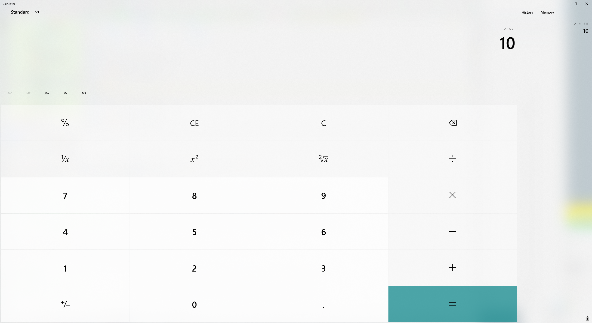
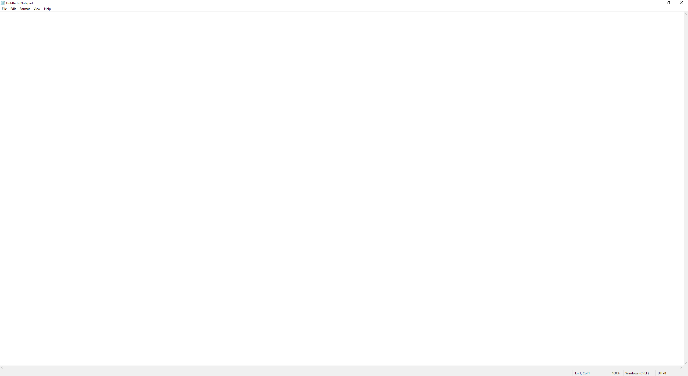
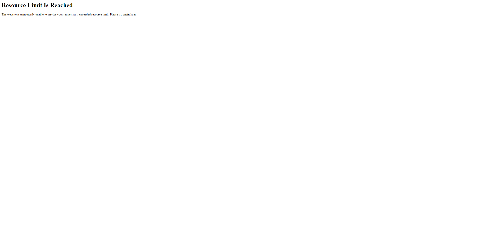

Started
Aug 22, 2022 04:50:00 pm
Ended
Aug 22, 2022 04:53:33 pm
Features Passed
1
Features Failed
3
Features
Scenarios
Steps
Timeline
Tags
| Name | Passed | Failed | Skipped | Others | Passed % |
|---|---|---|---|---|---|
| @WinApp | 9 | 3 | 0 | 0 | 75% |
| @regression | 3 | 2 | 0 | 0 | 60% |
| @smoke | 1 | 0 | 0 | 0 | 100% |
| @Notepad | 1 | 0 | 0 | 0 | 100% |
| @WebApp | 2 | 2 | 0 | 0 | 50% |
| @madetofail | 0 | 1 | 0 | 0 | 0% |
| @multiply | 1 | 0 | 0 | 0 | 100% |
| @madetopass | 1 | 0 | 0 | 0 | 100% |
| @addwinweb | 1 | 1 | 0 | 0 | 50% |
| @divide | 1 | 0 | 0 | 0 | 100% |
| @subtract | 1 | 0 | 0 | 0 | 100% |
| @add | 1 | 0 | 0 | 0 | 100% |
| @multiple | 3 | 2 | 0 | 0 | 60% |
| @Calculator | 8 | 3 | 0 | 0 | 72.727% |
System/Environment
| Name | Value |
|---|---|
| AppName | WinWebApps Test Suite |
| user | dee-sdpkm |
| version | 21H2 |
| build | 1.0.0-SNAPSHOT |
| os | Windows 10 Pro |
-
This is to test calculation feature of the Windows Calculator App
16:50:03 / 00:01:58:538 Fail
This is to test calculation feature of the Windows Calculator App
08.22.2022 16:50:03 08.22.2022 16:52:02 00:01:58:538 · #test-id=1Sample user story details (As a ...., I want to ...., So that .... ), JIRA ticket references etc can be provided hereFailBasic test of "" operation using data table PassBasic test of "+" operation using data tableGiven I have keyed "20" into the calculatorAnd I have clicked on "+" buttonAnd I have keyed "30" into the calculatorWhen I press on "=" button to get the calculation resultThen "50" should be displayed on the result screenFailBasic test of "x" operation using data tableGiven I have keyed "2" into the calculatorAnd I have clicked on "x" buttonAnd I have keyed "5" into the calculatorWhen I press on "=" button to get the calculation resultThen "7" should be displayed on the result screencom.winwebapps.apphooks.ApplicationHooks.screenshotOnFailure(io.cucumber.java.Scenario)Basic_test_of_"x"_operation_using_data_tablePassBasic test of "÷" operation using data tableGiven I have keyed "100" into the calculatorAnd I have clicked on "÷" buttonAnd I have keyed "40" into the calculatorWhen I press on "=" button to get the calculation resultThen "2.5" should be displayed on the result screenPassBasic test of "-" operation using data tableGiven I have keyed "675.86" into the calculatorAnd I have clicked on "-" buttonAnd I have keyed "46.897" into the calculatorWhen I press on "=" button to get the calculation resultThen "628.963" should be displayed on the result screenPassDivision of two numbersGiven I am on standard calculator screenWhen I clicked "3" into the calculatorAnd I clicked on "÷" buttonAnd I clicked "2" into the calculatorAnd I clicked on "=" buttonThen "1.5" should be displayed on the result screenPassAddition of two numbersGiven I am on standard calculator screenWhen I clicked "3" into the calculatorAnd I clicked on "+" buttonAnd I clicked "9" into the calculatorAnd I clicked on "=" buttonThen "12" should be displayed on the result screenPassMultiplication of two numbersGiven I am on standard calculator screenWhen I keyed "56523" into the calculatorAnd I clicked on "x" buttonAnd I keyed "876.59" into the calculatorAnd I clicked on "=" buttonThen "49,547,496.57" should be displayed on the result screenPassSubtraction of two numbersGiven I am on standard calculator screenWhen I keyed "5897547878623" into the calculatorAnd I clicked on "-" buttonAnd I keyed "2758.578" into the calculatorAnd I clicked on "=" buttonThen "5,897,547,875,864.422" should be displayed on the result screen -
This is to test Notepad features
16:52:02 / 00:00:05:219 Pass
This is to test Notepad features
08.22.2022 16:52:02 08.22.2022 16:52:07 00:00:05:219 · #test-id=95Sample user story details (As a ...., I want to ...., So that .... ), JIRA ticket references etc can be provided herPassLaunch notepad, verify "About Notepad" option, enter some text in notepad and save the file.Given I have launched Notepad applicationWhen I click on "Help" menu optionAnd I select "About Notepad" optionThen I view "Microsoft Windows" text appearing on screenWhen I click on "OK" buttonThen Mouse cursor goes to the "Text Editor" window on notepad application -
Login page feature
16:52:07 / 00:00:13:208 Fail
Login page feature
08.22.2022 16:52:07 08.22.2022 16:52:20 00:00:13:208 · #test-id=108FailLogin page titleGiven user is on login pageWhen user gets the title of the pageThen page title should be "Login - My Store1"com.winwebapps.apphooks.ApplicationHooks.screenshotOnFailure(io.cucumber.java.Scenario)Login_page_titlePassForgot Password linkGiven user is on login pageThen forgot your password link should be displayed -
This is to test calculation feature of the Windows Calculator App and verifying the result in a web app
16:52:20 / 00:01:07:616 Fail
This is to test calculation feature of the Windows Calculator App and verifying the result in a web app
08.22.2022 16:52:20 08.22.2022 16:53:28 00:01:07:616 · #test-id=126Sample user story details (As a ...., I want to ...., So that .... ), JIRA ticket references etc can be provided herePassAddition of two numbers - To test pass on webGiven I am on standard calculator screenWhen I clicked "4" into the calculatorAnd I clicked on "+" buttonAnd I clicked "3" into the calculatorAnd I clicked on "=" buttonThen "7" should be displayed on the result screenAnd I note down result and close Windows Calculator App and Open WebAppWhen I did a sum "+" operation of "4" and "3" and clicked on "=" buttonThen I get "7" as result and this is same as result shown by Windows calculator AppFailAddition of two numbers - To test failure on webGiven I am on standard calculator screenWhen I clicked "4" into the calculatorAnd I clicked on "+" buttonAnd I clicked "3" into the calculatorAnd I clicked on "=" buttonThen "7" should be displayed on the result screenAnd I note down result and close Windows Calculator App and Open WebAppWhen I did a sum "+" operation of "4" and "3" and clicked on "=" buttonThen I get "9" as result and this is same as result shown by Windows calculator Appcom.winwebapps.apphooks.ApplicationHooks.screenshotOnFailure(io.cucumber.java.Scenario)Addition_of_two_numbers_-_To_test_failure_on_web
-
@WinApp
12 tests
@WinApp
9 passed 3 failedStatus Timestamp TestName Fail 16:50:03 pm Basic test of " " operation using data table This is to test calculation feature of the Windows Calculator App.Basic test of "" operation using data table Pass 16:50:03 pm Basic test of "+" operation using data table This is to test calculation feature of the Windows Calculator App.Basic test of "+" operation using data tableFail 16:50:15 pm Basic test of "x" operation using data table This is to test calculation feature of the Windows Calculator App.Basic test of "x" operation using data tablePass 16:50:26 pm Basic test of "÷" operation using data table This is to test calculation feature of the Windows Calculator App.Basic test of "÷" operation using data tablePass 16:50:38 pm Basic test of "-" operation using data table This is to test calculation feature of the Windows Calculator App.Basic test of "-" operation using data tablePass 16:50:52 pm Division of two numbers This is to test calculation feature of the Windows Calculator App.Division of two numbersPass 16:51:07 pm Addition of two numbers This is to test calculation feature of the Windows Calculator App.Addition of two numbersPass 16:51:22 pm Multiplication of two numbers This is to test calculation feature of the Windows Calculator App.Multiplication of two numbersPass 16:51:41 pm Subtraction of two numbers This is to test calculation feature of the Windows Calculator App.Subtraction of two numbersPass 16:52:02 pm Launch notepad, verify "About Notepad" option, enter some text in notepad and save the file. This is to test Notepad features.Launch notepad, verify "About Notepad" option, enter some text in notepad and save the file.Pass 16:52:20 pm Addition of two numbers - To test pass on web This is to test calculation feature of the Windows Calculator App and verifying the result in a web app.Addition of two numbers - To test pass on webFail 16:52:54 pm Addition of two numbers - To test failure on web This is to test calculation feature of the Windows Calculator App and verifying the result in a web app.Addition of two numbers - To test failure on web -
@regression
5 tests
@regression
3 passed 2 failedStatus Timestamp TestName Fail 16:50:03 pm Basic test of " " operation using data table This is to test calculation feature of the Windows Calculator App.Basic test of "" operation using data table Pass 16:50:03 pm Basic test of "+" operation using data table This is to test calculation feature of the Windows Calculator App.Basic test of "+" operation using data tableFail 16:50:15 pm Basic test of "x" operation using data table This is to test calculation feature of the Windows Calculator App.Basic test of "x" operation using data tablePass 16:50:26 pm Basic test of "÷" operation using data table This is to test calculation feature of the Windows Calculator App.Basic test of "÷" operation using data tablePass 16:50:38 pm Basic test of "-" operation using data table This is to test calculation feature of the Windows Calculator App.Basic test of "-" operation using data table -
@smoke
1 tests
@smoke
1 passedStatus Timestamp TestName Pass 16:51:07 pm Addition of two numbers This is to test calculation feature of the Windows Calculator App.Addition of two numbers -
@Notepad
1 tests
@Notepad
1 passedStatus Timestamp TestName Pass 16:52:02 pm Launch notepad, verify "About Notepad" option, enter some text in notepad and save the file. This is to test Notepad features.Launch notepad, verify "About Notepad" option, enter some text in notepad and save the file. -
@WebApp
4 tests
@WebApp
2 passed 2 failedStatus Timestamp TestName Fail 16:52:07 pm Login page title Login page feature.Login page titlePass 16:52:14 pm Forgot Password link Login page feature.Forgot Password linkPass 16:52:20 pm Addition of two numbers - To test pass on web This is to test calculation feature of the Windows Calculator App and verifying the result in a web app.Addition of two numbers - To test pass on webFail 16:52:54 pm Addition of two numbers - To test failure on web This is to test calculation feature of the Windows Calculator App and verifying the result in a web app.Addition of two numbers - To test failure on web -
@madetofail
1 tests
@madetofail
1 failedStatus Timestamp TestName Fail 16:52:54 pm Addition of two numbers - To test failure on web This is to test calculation feature of the Windows Calculator App and verifying the result in a web app.Addition of two numbers - To test failure on web -
@multiply
1 tests
@multiply
1 passedStatus Timestamp TestName Pass 16:51:22 pm Multiplication of two numbers This is to test calculation feature of the Windows Calculator App.Multiplication of two numbers -
@madetopass
1 tests
@madetopass
1 passedStatus Timestamp TestName Pass 16:52:20 pm Addition of two numbers - To test pass on web This is to test calculation feature of the Windows Calculator App and verifying the result in a web app.Addition of two numbers - To test pass on web -
@addwinweb
2 tests
@addwinweb
1 passed 1 failedStatus Timestamp TestName Pass 16:52:20 pm Addition of two numbers - To test pass on web This is to test calculation feature of the Windows Calculator App and verifying the result in a web app.Addition of two numbers - To test pass on webFail 16:52:54 pm Addition of two numbers - To test failure on web This is to test calculation feature of the Windows Calculator App and verifying the result in a web app.Addition of two numbers - To test failure on web -
@divide
1 tests
@divide
1 passedStatus Timestamp TestName Pass 16:50:52 pm Division of two numbers This is to test calculation feature of the Windows Calculator App.Division of two numbers -
@subtract
1 tests
@subtract
1 passedStatus Timestamp TestName Pass 16:51:41 pm Subtraction of two numbers This is to test calculation feature of the Windows Calculator App.Subtraction of two numbers -
@add
1 tests
@add
1 passedStatus Timestamp TestName Pass 16:51:07 pm Addition of two numbers This is to test calculation feature of the Windows Calculator App.Addition of two numbers -
@multiple
5 tests
@multiple
3 passed 2 failedStatus Timestamp TestName Fail 16:50:03 pm Basic test of " " operation using data table This is to test calculation feature of the Windows Calculator App.Basic test of "" operation using data table Pass 16:50:03 pm Basic test of "+" operation using data table This is to test calculation feature of the Windows Calculator App.Basic test of "+" operation using data tableFail 16:50:15 pm Basic test of "x" operation using data table This is to test calculation feature of the Windows Calculator App.Basic test of "x" operation using data tablePass 16:50:26 pm Basic test of "÷" operation using data table This is to test calculation feature of the Windows Calculator App.Basic test of "÷" operation using data tablePass 16:50:38 pm Basic test of "-" operation using data table This is to test calculation feature of the Windows Calculator App.Basic test of "-" operation using data table -
@Calculator
11 tests
@Calculator
8 passed 3 failedStatus Timestamp TestName Fail 16:50:03 pm Basic test of " " operation using data table This is to test calculation feature of the Windows Calculator App.Basic test of "" operation using data table Pass 16:50:03 pm Basic test of "+" operation using data table This is to test calculation feature of the Windows Calculator App.Basic test of "+" operation using data tableFail 16:50:15 pm Basic test of "x" operation using data table This is to test calculation feature of the Windows Calculator App.Basic test of "x" operation using data tablePass 16:50:26 pm Basic test of "÷" operation using data table This is to test calculation feature of the Windows Calculator App.Basic test of "÷" operation using data tablePass 16:50:38 pm Basic test of "-" operation using data table This is to test calculation feature of the Windows Calculator App.Basic test of "-" operation using data tablePass 16:50:52 pm Division of two numbers This is to test calculation feature of the Windows Calculator App.Division of two numbersPass 16:51:07 pm Addition of two numbers This is to test calculation feature of the Windows Calculator App.Addition of two numbersPass 16:51:22 pm Multiplication of two numbers This is to test calculation feature of the Windows Calculator App.Multiplication of two numbersPass 16:51:41 pm Subtraction of two numbers This is to test calculation feature of the Windows Calculator App.Subtraction of two numbersPass 16:52:20 pm Addition of two numbers - To test pass on web This is to test calculation feature of the Windows Calculator App and verifying the result in a web app.Addition of two numbers - To test pass on webFail 16:52:54 pm Addition of two numbers - To test failure on web This is to test calculation feature of the Windows Calculator App and verifying the result in a web app.Addition of two numbers - To test failure on web
-
java.lang.AssertionError
2 tests
java.lang.AssertionError
2 failedStatus Timestamp TestName Fail 16:50:21 pm Then "7" should be displayed on the result screen This is to test calculation feature of the Windows Calculator App.Basic test of "x" operation using data table.Then "7" should be displayed on the result screenFail 16:52:11 pm Then page title should be "Login - My Store1" Login page feature.Login page title.Then page title should be "Login - My Store1" -
org.junit.ComparisonFailure
1 tests
org.junit.ComparisonFailure
1 failedStatus Timestamp TestName Fail 16:53:23 pm Then I get "9" as result and this is same as result shown by Windows calculator App This is to test calculation feature of the Windows Calculator App and verifying the result in a web app.Addition of two numbers - To test failure on web.Then I get "9" as result and this is same as result shown by Windows calculator App